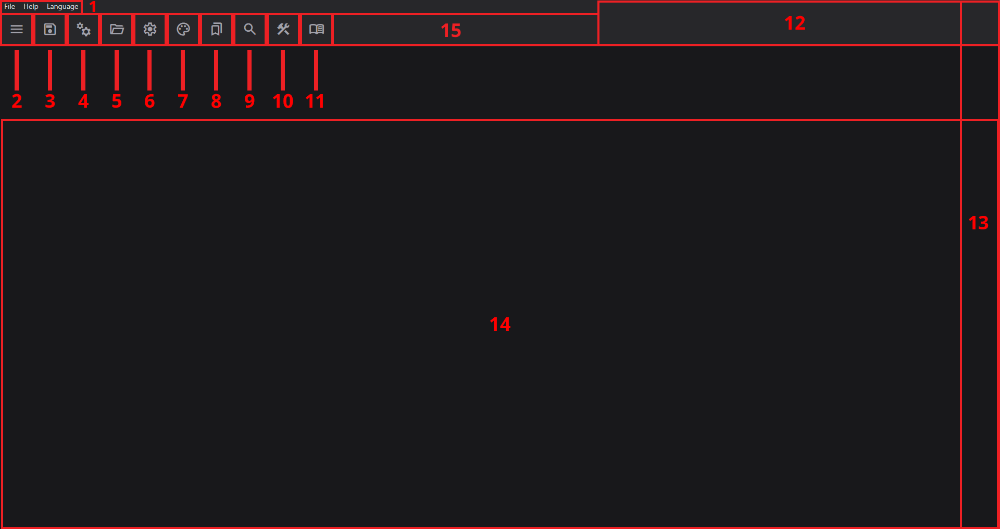

First Launch
RPGMTranslate is an open source and simple translation tool for RPG Maker games. Its main strength lies in maintaining a simple file structure and using plain text translation files.
For advanced usage, refer to:
Also, help us improve the docs!
Installation
Download the latest release from GitHub. The program is available as:
- Windows:
.msi(preferable) or.exeinstaller - Linux:
.debpackage or.AppImage - Other platforms: Build from source
On first launch, the program creates:
- Settings file:
ROOT_DIR/resources/settings.json - Themes file:
ROOT_DIR/resources/themes.json
Note: If the interface doesn't load, press F12 to open the console for error messages.
Interface Layout

The screenshot shows the program layout with opened project and tab.
Quick run over it:
- Menu bar. Contains
File,HelpandLanguagemenus. - Utilities panel buttons. Buttons in order: Tab panel, Save, Write, Open, Settings, Themes, Bookmarks, Search, Batch processing, Read, Purge.
- Machine translation language inputs.
- Right-top section of utilities panel. Contains current tab name display, global progress meter, editable game title and game engine.
- Tab content area. That's were all translation is done. It includes row column, source column, and translation columns, where each additional translation column can be created with
+button. Translation columns names are changeable.
Important terms:
- "Read" refers to parsing text from the game. Read also can be used in append mode, to extend the current translation with new text.
- "Write" refers to writing translation to the initial game files, and producing translated RPG Maker compatible files.
- "Project" is a directory containing an RPG Maker game, that can be opened in RPGMTranslate.
- "Tab" is an entry from the tab panel that opens a specific file.
Hotkeys:
- Ctrl and +: Zoom in
- Ctrl and -: Zoom out
Opening a Project
- Click the Open directory button
- Select your RPG Maker game directory (the program handles encrypted
.rgssarchives) - The program creates an
.rpgmtranslatedirectory containing:- Translation files in plain text format at
.rpgmtranslate/translation - Backup directory at
.rpgmtranslate/backups - Output files when writing at
.rpgmtranslate/output
- Translation files in plain text format at
- Optional, but recommended: Initialize git repository and periodically commit changes.
If the game directory already has translation directory, its contents will be copied to .rpgmtranslate/translation, but not vice versa. To bring the translation back to GAME_FOLDER/translation you'll have to manually copy it. This is implemented that way to be as secure as possible, and not accidentally overwrite any translation.
The game's title, engine, current opened tab and translation progress will be displayed in the top-right corner of the UI.
Title is editable, it will be saved and written correctly.
Note: The program, by default, creates backups every 60 seconds and stores up to 99 backups.